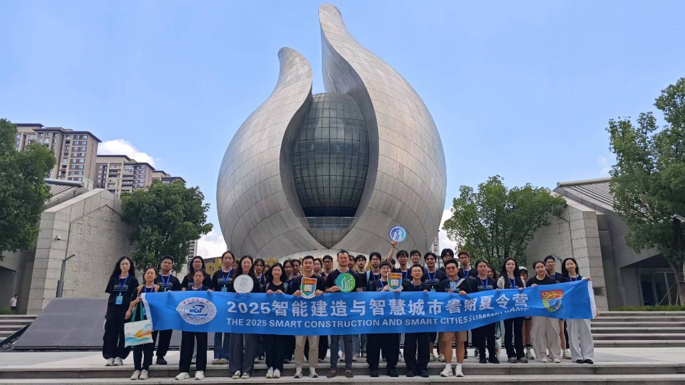

2025年7月9至12日，譚坦 獲教育部香港與內地高校師生交流計劃支持，帶領香港大學學生赴華中科技大學參加2025智能建造與智慧城市暑期夏令營，開展講座、工作坊與實地參訪。
交流期間，師生參觀國家數字建造技術創新中心及中國建築科技館，將課堂學習與數字建造前沿研究及實踐相結合。課題組張卓然亦一同參加，並擔任 summer camp tutor，指導學生工作坊與匯報。
研究團隊誠摯感謝華中科大老師和同學們——特別是土木與水利工程學院師生——的熱情款待與支持。
譚坦 獲教育部香港與內地高校師生交流計劃支持，帶領港大學生赴華中科技大學參加 2025 暑期夏令營；張卓然同行並擔任 tutor。

2025年7月9至12日，譚坦 獲教育部香港與內地高校師生交流計劃支持，帶領香港大學學生赴華中科技大學參加2025智能建造與智慧城市暑期夏令營，開展講座、工作坊與實地參訪。
交流期間，師生參觀國家數字建造技術創新中心及中國建築科技館，將課堂學習與數字建造前沿研究及實踐相結合。課題組張卓然亦一同參加，並擔任 summer camp tutor，指導學生工作坊與匯報。
研究團隊誠摯感謝華中科大老師和同學們——特別是土木與水利工程學院師生——的熱情款待與支持。